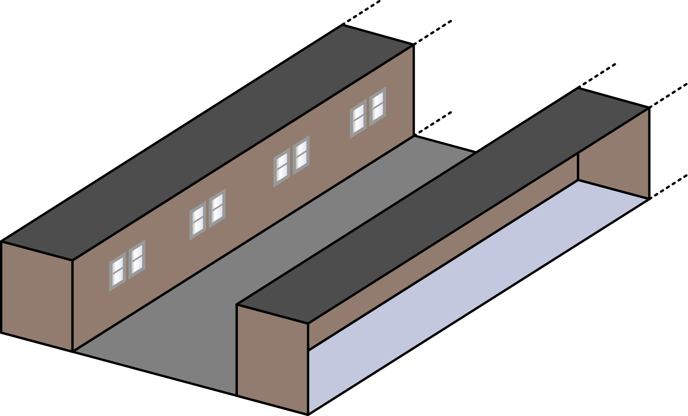
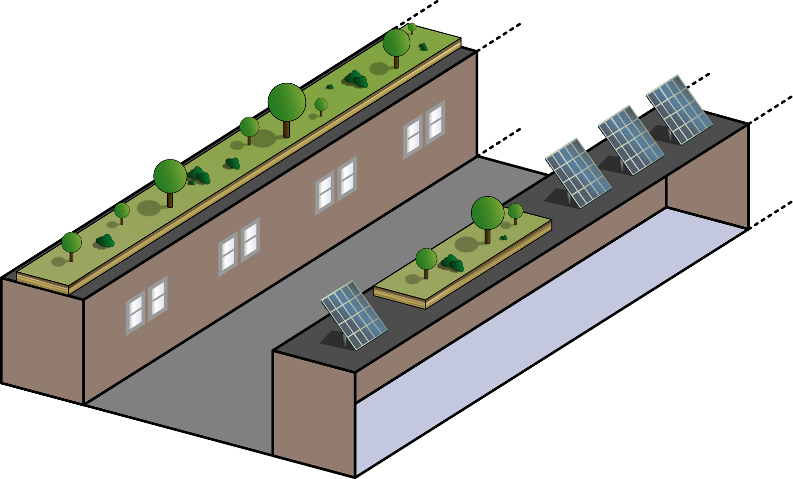
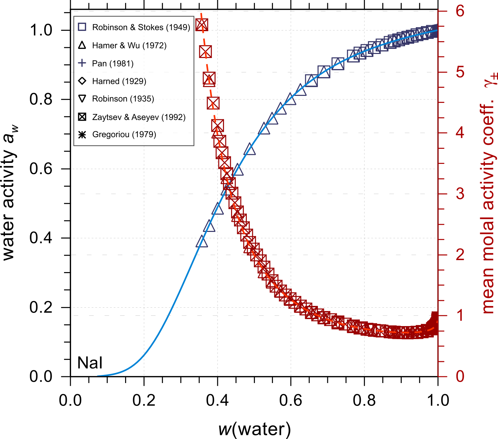

Hang Yin (尹航)
| Ph.D. Student in Environmental Sciences (she/her) | |
| University of Guelph | |
| Guelph, ON, Canada | |
| hyin09@uoguelph.ca | |
| Curriculum Vitae | |


|
Research Interests
Urban climate, Climate change, Atmospheric sciences, Mitigation strategies, Environmental equity and justice
Skills Summary
Programming
Fortran, Bash
Analysis
Python, Matlab, CDO
Platforms
Linux, MacOS, Windows
Tools
Latex, Microsoft Office, Inkscape
Languages
English, Mandarin
Active Reseach Focus

Building energy prediction at the city scale
Building energy prediction at the city scale
Image source: H. Yin

Building energy mitigation and thermal equity from novel rooftop techonologies
Building energy mitigation and thermal equity from novel rooftop techonologies
Image source: H. Yin
Past Reseach Focus

Aerosol thermodynamic modelling: interactions between water/organic solvents and iodine/carbonate species